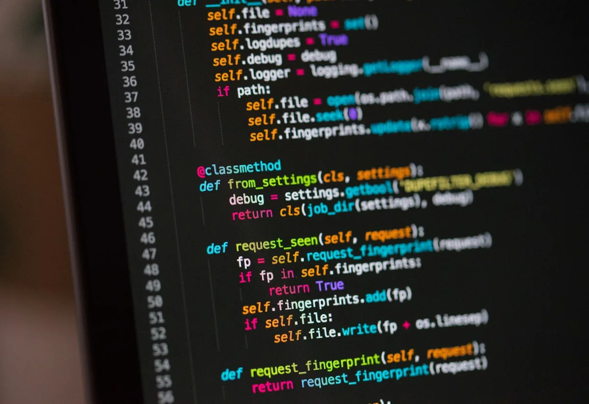
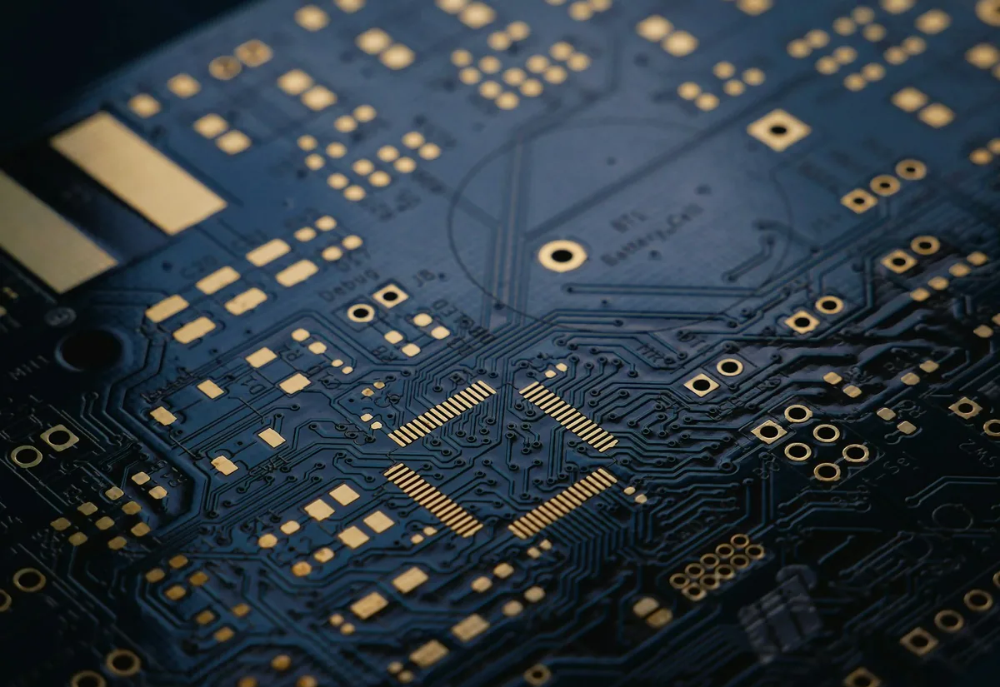
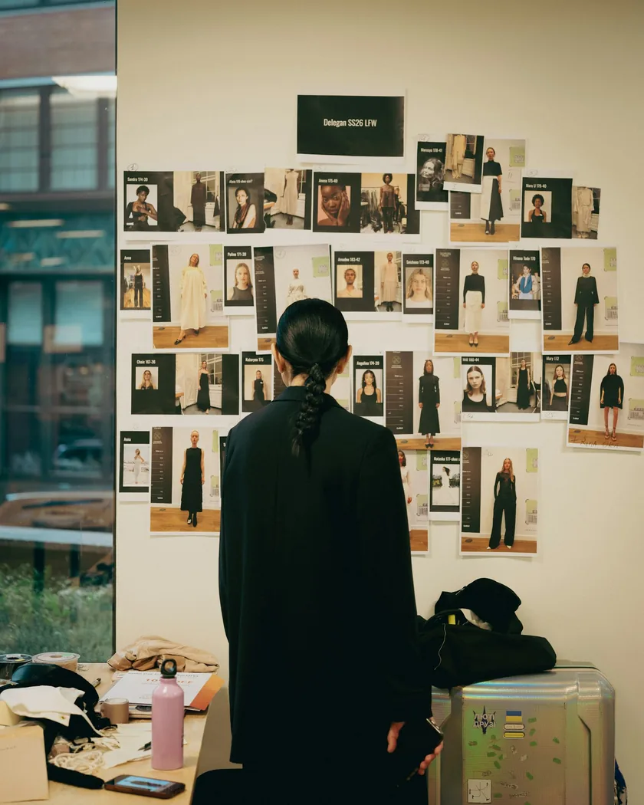

whatever-recall
AI-native project memory. Knowledge is stamped onto the git commit at write-time, read back in microseconds for zero tokens.
Visit the product →Digital product studio · Bavaria · est. 2016
Tools, web apps and software that go to production — not to a slide deck. Two founders, senior hands only.
(01) — AI, actually built in
Most agency sites say they do AI. This one is one. Ask it what we cost, whether we're right for you, or what we'd actually build — or hand it your project and watch it write the brief.
Runs on a serverless function with a rate limit — the key never touches your
browser. Right now this prototype answers from a local knowledge base; flip
AI_MODE to live in v3.js once the endpoint is deployed.
(02) — Selected work
Scroll sideways, or use the arrows. Everything here is ours and live — client cases follow once they're cleared.

AI-native project memory. Knowledge is stamped onto the git commit at write-time, read back in microseconds for zero tokens.
Visit the product →
Hand-written vanilla HTML/CSS/JS. No framework, no build step — while running a custom canvas pixel-physics engine.
Want one like it →
Reserved for a real, cleared client project — the structure is built, the content is yours to supply. Name, one honest result, the stack.
Placeholder →Same again. Two real client names here do more for trust than any amount of copy about how much we care.
Placeholder →01 / 04
(03) — P.S.
Readable by people and agents — every word is real DOM text, structured with JSON-LD and summarised in llms.txt.
(04) — What we do
Cards stack as you scroll — the one you're reading stays, the next slides over it.
(05) — Who we are
An independent studio that cares about what happens after launch — because we're still the ones who get the call.
The company is eight years old. The two of us have been doing this for over twenty — for Deutsches Museum, Blizzard, Microsoft, Apple, Travian and Ravensburger, long before McCain Digital had a name.


Hover a portrait — placeholders until the real photos land.
(06) — Straight answers
Pick one — the answer streams in, same engine as the console above.
(07) — Proof
The brands below are where the work happened. The quotes are the part we're still collecting — three slots, three real clients, no invented praise.
Career reference from two decades of prior work — not a client list of this studio, and not a claim that any of them commissioned McCain Digital.
Reserved for a real, cleared client quote. One honest sentence about what changed after launch beats a page of adjectives.
Awaiting referenceName · role · company
Second slot. Ideally the one who can name a number — hours saved, load time halved, enquiries doubled.
Awaiting referenceName · role · company
Third slot. Best used for the long-running client — the one who proves we're still here in year three.
Awaiting referenceName · role · company
(08) — Start a project
A real reply within 24 hours, a fixed quote within 48 — from one of the two people who'd build it. No sales call.
info@mccain-digital.com
Holderweg 1 · 86869 Oberostendorf · Bavaria, Germany
Mon–Fri · 9:00–18:00 CET